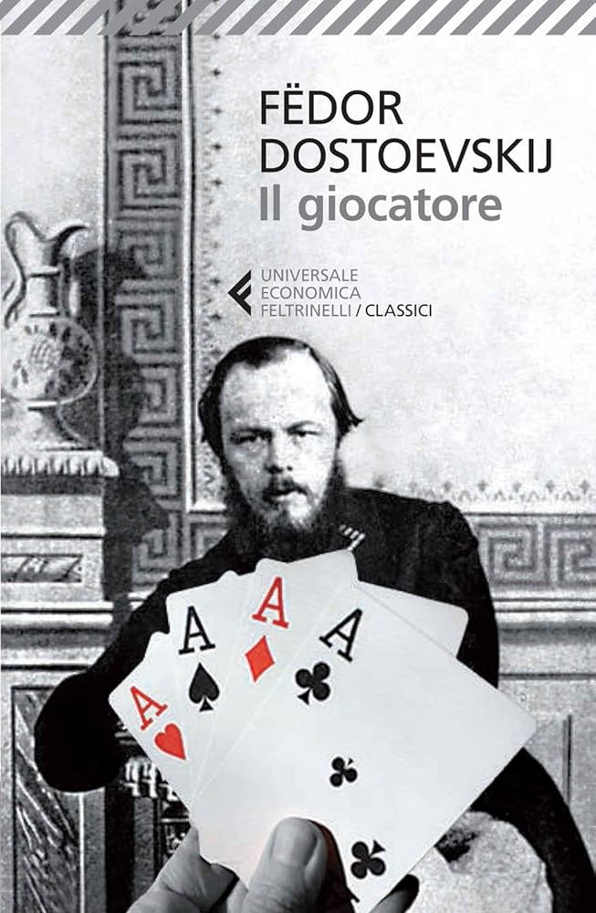

Alexei Ivanovič lavora come precettore per una famiglia russa decaduta, in soggiorno in un'immaginaria cittadina termale tedesca chiamata Roulettenburg. Attorno a lui ruotano debiti, aspettative di eredità e un amore tormentato per Polina, la figlia della famiglia. Ma è il tavolo verde della roulette a diventare progressivamente il centro della sua esistenza: Dostoevskij, che scrisse questo romanzo in appena ventisei giorni per saldare i propri debiti di gioco, costruisce un ritratto lucidissimo e febbrile della dipendenza e dell'autodistruzione.
Questo è stato il primo libro importante che ho comprato per conto mio, e l'ho iniziato in un periodo scolastico piuttosto pieno, a marzo. All'inizio riuscivo a ritagliarmi dei momenti per leggerlo: in macchina prima di entrare a scuola, o quando finivo una verifica in anticipo.
Poi però sono stata sommersa dallo studio, e tutti quei momenti "vuoti" che prima dedicavo alla lettura sono finiti occupati da ripassi e verifiche. Sono riuscita a riprenderlo davvero solo a giugno, con la fine della scuola — ma con una lettura così frammentata e distante nel tempo, penso di non essere riuscita ad apprezzarlo fino in fondo.
Un vero peccato, perché Il Giocatore è un testo tutt'altro che semplice: articolato, con personaggi complessi, che avrebbe meritato una lettura più continua e concentrata. Nonostante tutto, mi è piaciuto — mi dispiace solo di non essere riuscita a coglierne appieno la bellezza.
"Che sono io, adesso? Uno zero. Che cosa posso essere domani? Domani posso resuscitare dai morti e ricominciare a vivere! Posso trovare l'uomo in me stesso, fino a che non è ancora andato perduto!"
"L'uomo ama vedere il suo migliore amico umiliato davanti a lui. Per la maggior parte degli uomini, l'amicizia è fondata sull'umiliazione."